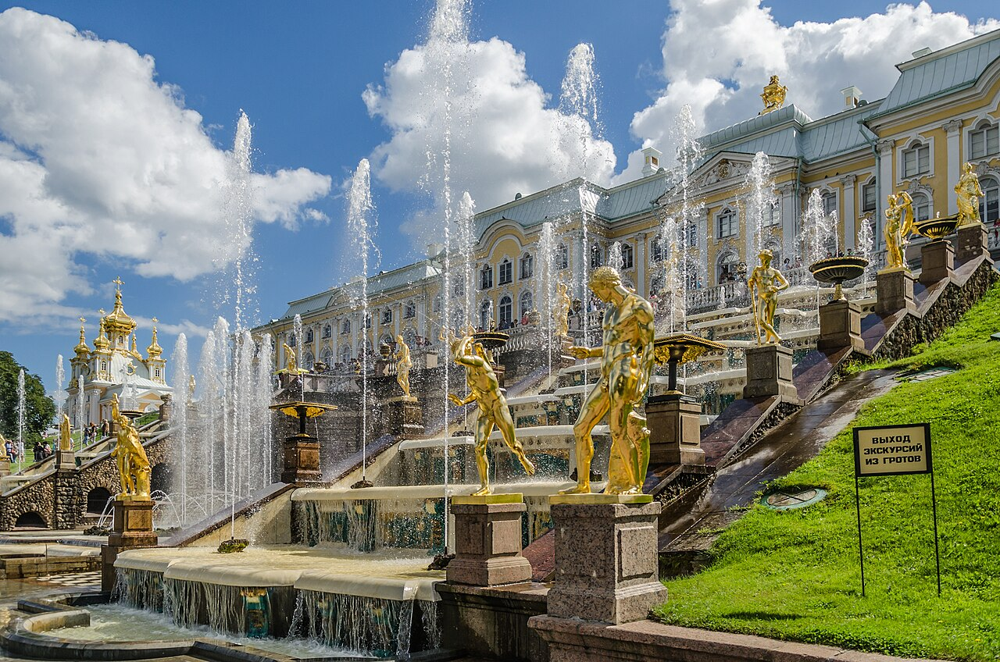

TRIPROTARVISOR
La Venezia del Nord

Peterhof e i palazzi
Peterhof sta a una trentina di chilometri dalla città, verso il Golfo di Finlandia, e si arriva con la linea 2 dei treni fino a Novy Peterhof e poi con un autobus. Non è il posto più comodo del mondo, però appena si vede la prima fontana si capisce perché valga la spesa.
La chiamano la Versailles russa e il paragone non è casuale: Pietro il Grande, dopo il viaggio in Francia del 1717, tornò a casa con l'idea fissa di costruire qualcosa di più bello di quello che aveva visto. I lavori cominciarono nel 1714 e andarono avanti per decenni, perché ogni generazione di zar aggiungeva un palazzo nuovo.
La Grande Cascata
È il punto centrale di tutto il complesso: un canale largo 300 metri che scende dal palazzo verso il mare, con oltre 140 fontane e statue, e l'acqua arriva fin qui pompata dal mare senza pompe elettriche, solo per gravità. In mezzo c'è la statua di Sansone, che apre con le mani le fauci di un leone: quando scopre la bocca, l'acqua esce e la mascella del leone si chiude di colpo, con un colpo secco che si sente da lontano.
Quella statua non è solo un gioco. Sansone è prigioniero dell'acciaio per aver tagliato i capelli a un gigante, e mentre lotta stringe tra le dita le fauci del leone vincitore: le Due Germanie, sconfitte dai russi durante la guerra del Nord nel 1721.
Gli altri palazzi
- Il Palazzo di Pietro I, il più piccolo, dove lo zar viveva d'estate
- Monplaisir, la residenza estiva con i giardini all'italiana
- Grand Marly, per la fontana che funziona senza nessuna pompa
- La cappella, piccola e tutta d'oro, costruita a Londra e trasportata pezzo per pezzo
Attenzione alle date: le fontane funzionano solo da metà maggio fino ai primi di ottobre, e con il gelo le statue vanno chiuse con i teloni per non spaccarsi. Se si va fuori stagione si vede comunque la cascata, ma asciutta, e l'effetto è perso: noi ci tornerei in giugno.